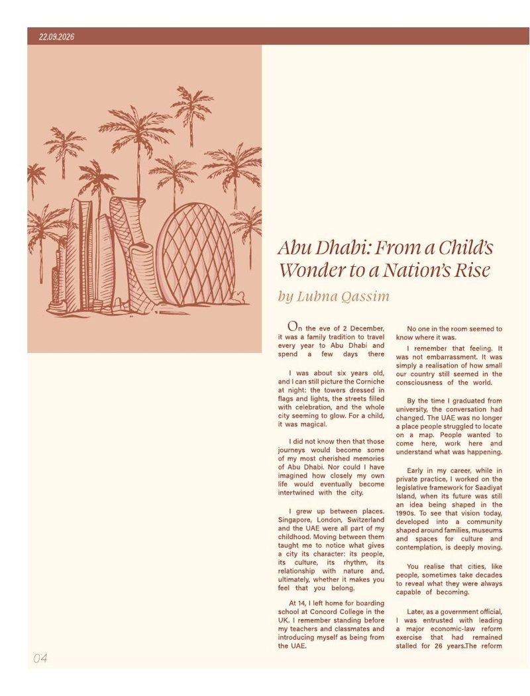
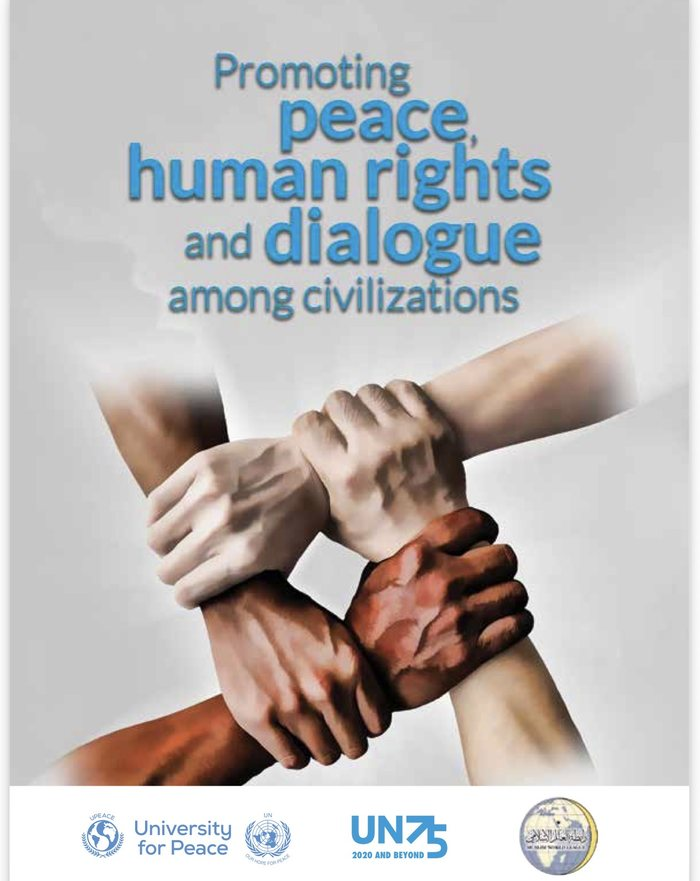
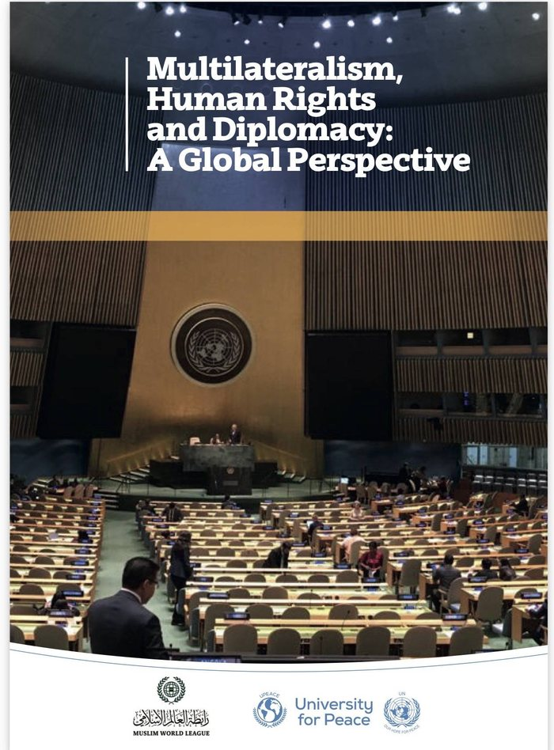
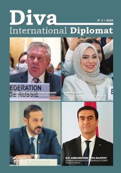

The Written & Spoken Word
On law, power and a changing world
A selection of writing, publications and conversations shaped by more than two decades at the intersection of law, government, business and diplomacy.
Featured Writing
- The New Calculus of Global InvestmentITT Nexus · 3 September 2026
- How Merchant States Are Reshaping Global Business ConnectivityThe Business Times, Singapore · 9 July 2026
- Leading the UN in a World That Has Already ChangedModern Diplomacy · 26 June 2026
- The New Age of ChokepointsWhy global commerce depends on too few places and too little governanceThe Business Times, Singapore · 28 February 2026
Books & Publications

Promoting Peace, Human Rights and Dialogue among Civilizations
University for Peace · UN75 · Muslim World League

Multilateralism, Human Rights and Diplomacy: A Global Perspective
Muslim World League · University for Peace · United Nations
Selected Essays
Earlier writing on the legal, economic and social questions shaping the UAE’s development, including bankruptcy reform, education and women’s participation.
- For the country’s prosperity, better bankruptcy lawsThe National · 26 August 2009
- Our leaders had a vision: today it is our realityThe National · 11 January 2009
- To build a world, begin with a book at bedtimeThe National · 18 November 2008
- How to reduce the gender parity gapThe National · 21 May 2008
Interviews & Profiles

We Will Not Say Goodbye but Au Revoir
Read interview →- Law, Power, and the Limits of Institutions: A Conversation on Governance in a Fragmenting WorldThe International Wire · interview by Danish Shaikh · 6 February 2026Read interview →
- Legal Visionary: Lubna Qassim’s Journey from Boardrooms to Global DiplomacyCorporate Counsel Now · Association of Corporate Counsel · 4 September 2025Read interview →
More interviews and profiles
- My UAE: Lubna Qassim on her varied legal and political careerThe National · Jessica Hill · 18 May 2017Read interview →
- Female appointments to key positions show KSA commitment to modernization, says UAE’s Lubna QassimArab News · 10 July 2017Read interview →
- Incentivizing Change: 10 Guidelines For MENA Women In BusinessEntrepreneur Middle East · Soukaina Rachidi Alaoui · 6 June 2017Read interview →
- UAE public sector needs more expertise in economic legislationThe Guardian · Public Leaders Network · 20 November 2013Read interview →
- Breaking barriers: Lubna QassimThe Legal 500 · GC Magazine · Advice To My Younger Self: Reflections of Successful Women LawyersRead interview →
- Inspiring Women: Lubna QassimAl Shindagah · Charlotte KanRead interview →
Selected Recognition & Citations
Cited in: Women Matter: Ten Years of Insights on Gender Diversity · McKinsey & Company